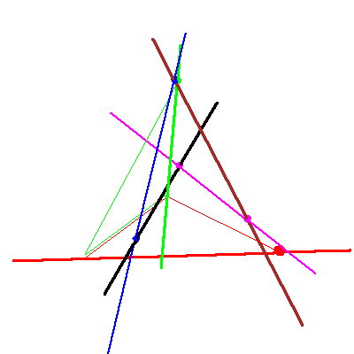

The problem of four lines in P3


The problem of four lines in P3 |
|
|  |
Consider the lines (blue and magenta) that meets two general lines (black, and brown), as well as the two lines in our flags in P3. (The fixed flag and the moving flag.) We follow the solution lines, as the moving flag degenerates. We will also indicate the checker game played out in this sequence. |